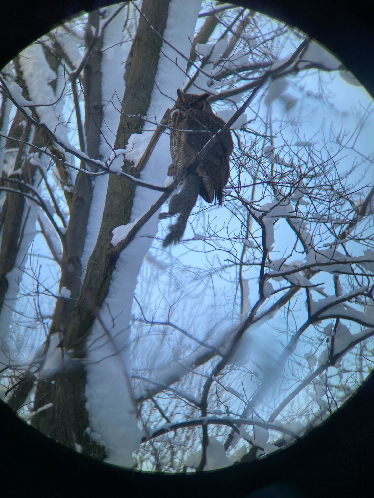
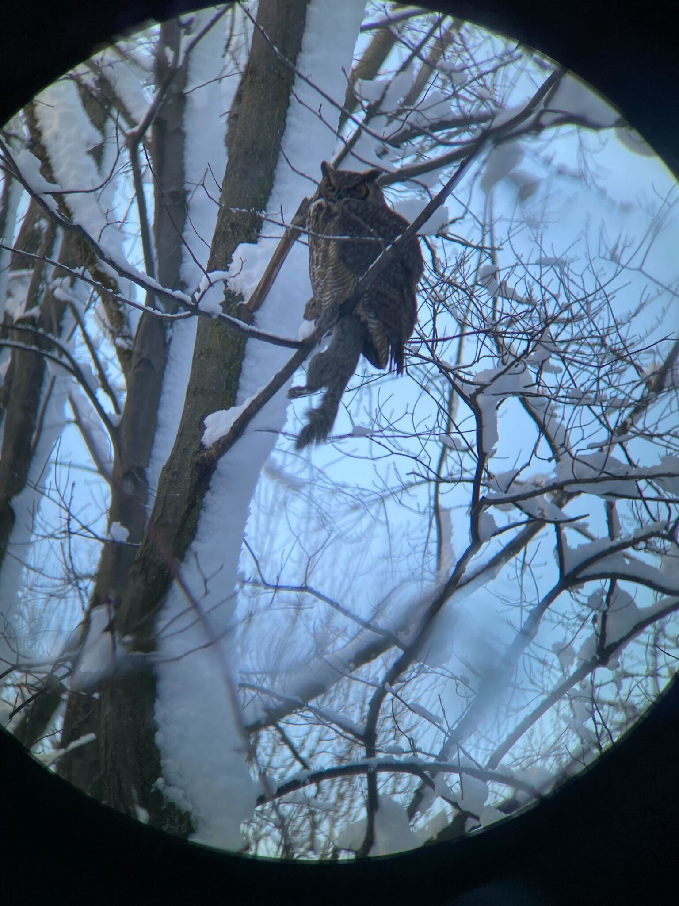

左上からムナジロゴジュウカラ、ショウジョウコウカンチョウ、ユキヒメドリ、リス、セジロアカゲラ、コマツグミ @モントリオール植物園

アメリカワシミミズク @ポワントオープラーリー；リスを捕まえている。
カナダガン達、オウギアイサ、雪ダルマ @ラピード公園
冬のモントリオールで探鳥をする際のポイントを、筆者（国内ライフリスト200～250の中級バーダー）の経験に基づき記しています。
注：筆者の観察種リストは、多くの場合数時間程度の探鳥を一回きり実施した結果であり、その場所で観察可能なすべての種を網羅しているわけではありません。参考情報として記載しています。
筆者が訪れた時期：2023年12月。所見：冬は、鳥がいれば見つけやすいので、良い場所を見つけて待っていれば種数を稼げる。ただし全体の種数が多いわけではない。気候等：下がる時は気温-10度になり、とても寒い。雪が積もると気温は大丈夫だが、セントローレンス川沿いの探鳥地が非常に歩きにくくなる。私はくるぶしが隠れるハイキングシューズ（防水なし）で行き、足はまるまる水没した。
このページのポイント：筆者は、滞在中の空き時間（細切れに、数時間～半日）に探鳥を行ったため、移動に時間がかかる場所を訪れることはできなかった。その中で、比較的観察種数を稼げそうなポイントを回った。鳥にさして興味がない同伴家族がいたり、出張用務があったりと、探鳥できる時間が限られる方は是非参考にしていただきたい。筆者のように地下鉄とバスで移動する場合は、期限付きの乗り放題パスを購入するのが便利である。
比較的アクセスがしやすい中では、水辺の環境が良いエリア。数時間の余裕があれば行くことができる。
ピンで示したあたりから、北東側の水辺と、東側の池に鳥が多い。少し北側では、砂州にカモメ類が多く降りている。川をオジロワシなどの大型猛禽が通過することもあるようだ。
本数は多くないが、110番あるいは58番のバスで近くまで行くことができる。また、緑の地下鉄でAngrignon駅まで行き、そこから歩くことも可能である。
カナダガン、オウギアイサ、ショウジョウコウカンチョウ、セジロコゲラ、アメリカガモ、オカヨシガモ、クロワカモメ、オオカモメ、ホオジロガモなど。
日本における、いわゆる都市公園での探鳥と似た感覚で鳥を探すことができる。
多くの種がみられたのは、日本庭園とプルミエール＝ナシオン庭園の間あたり（園内東部）と、園内西部の池周辺である（地図のピンがあるあたり）。園内の各所には餌台が設置されている（おそらく冬場のみ？）が、多くの場合リス（トウブハイイロリス）が群がっている。リスがいない場合には、アメリカコガラ、セジロコゲラなどの小鳥が訪れていることもある。
緑の地下鉄、Pie-IX駅から歩く。
コマツグミ、ショウジョウコウカンチョウ、セジロアカゲラ、セジロコゲラ、ムナジロゴジュウカラ、ムネアカゴジュウカラ、オウゴンヒワ、アメリカコガラなど。
まとまった森林がある自然公園である。モントリオール島には類似した環境は他にないと思われる。
この森をねぐらとするワシミミズクや、エボシクマゲラ等のキツツキ類を期待したい。週末であれば、熱心な地元バーダーにも会うことができる。筆者はワシミミズク等の鳥情報を教えてもらうことができた。ただし、モントリオールでは日常会話はフランス語であるため、英語が通じにくい場合もある。
緑の地下鉄のHonoré-Beaugrand駅から、186番のバスに乗っていくのが最もシンプルである（バス停：Sherbrooke / Yves-Thériault）。
セジロコゲラ、セジロアカゲラ、アメリカワシミミズク、ムナフヒメドリ等
ラ・フォンテーヌ公園 Parc La Fontaine：ユキヒメドリ／街中各所：メキシコマシコ、ホシムクドリ、イエスズメ、アメリカコガラ、アメリカガラス。
滞在中の観察種リスト：
コマツグミ
ショウジョウコウカンチョウ
アメリカコガラ
ムネアカゴジュウカラ
ムナジロゴジュウカラ
オウゴンヒワ
メキシコマシコ
セジロアカゲラ
セジロコゲラ
ユキヒメドリ
オウギアイサ
アメリカガモ
クロワカモメ
ホオジロガモ
アメリカガラス
ホシムクドリ
イエスズメ
オカヨシガモ
マガモ
カナダガン
オオカモメ
カワアイサ
左上からムナジロゴジュウカラ、ショウジョウコウカンチョウ、ユキヒメドリ、リス、セジロアカゲラ、コマツグミ @モントリオール植物園

アメリカワシミミズク @ポワントオープラーリー；リスを捕まえている。
カナダガン達、オウギアイサ、雪ダルマ @ラピード公園